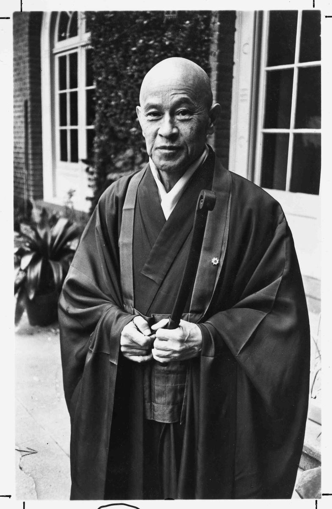

Thiền Trong Hành Động

Trong sự hỗn loạn của thế giới hiện đại, đây là vẻ đẹp từ những hành động đơn giản. Chúng ta bị vùi dập dữ dội bởi bất cứ thứ gì - email, các cuộc trao đổi, tin tức, sự kiện, những yêu cầu đang xảy ra xung quanh. Tâm trí ta luôn dồn dập những suy nghĩ về quá khứ, lo lắng về tương lai, phiền nhiễu lôi kéo chúng ta theo mọi hướng. Nhưng tất cả những suy nghĩ đó tan đi khi chúng ta chỉ tập trung vào việc đang làm. Không quan trọng là làm gì: ngồi, đi lại, viết lách, đọc, ăn, giặt giũ, trò chuyện, ôm ấp, chơi đùa. Bằng cách tập trung vào việc đang làm, chúng ta bỏ đi những lo lắng và băn khoăn, ghen tuông và giận dữ, đau buồn và xao lãng.
Có một cái gì sâu sắc trong sự đơn giản đó. Một thứ tuyệt đẹp đến nỗi có thể làm nhói tim, nín thở.
Bạn đang giữa ngày làm việc, và bạn đang bị cuốn vào cơn bão cát của những suy nghĩ, cảm xúc, những việc phải làm, những cuộc họp, cũng như các thông tin giao tiếp của ngày hôm đó. Hãy ngừng lại. Hít thở. Để tất cả mọi thứ mờ dần đi.
Giờ hãy tập trung vào làm một việc, ngay lập tức. Chỉ chọn một việc, và dẹp đi tất cả những thứ gây xao lãng khác. Nghiêm túc đấy, dẹp tất cả đi! Tắt máy tính của bạn. Ngừng đọc mục này (thôi đọc thêm một đôi câu, sau đó đóng sách lại).

Hãy để tất cả suy nghĩ vọng tưởng về bất cứ việc gì khác ngoài việc bạn đang làm mờ dần. Cũng có thể sau đó chúng sẽ lại đến, nhưng nhẹ nhàng lưu ý bản thân về chúng, rồi để chúng biến đi. Quay trở lại với việc đang làm.
Chỉ làm việc đó mà thôi.
Phần còn lại của thế giới làm bạn mất tập trung sẽ trở nên vô nghĩa. Chỉ có bạn và việc bạn đang làm. Và bạn nhận ra: mọi chuyện chỉ có vậy.
“Thiền
không phải là
một kiểu phấn khích,
mà là tập trung vào
thói quen bình thường hàng ngày
của chúng ta.”
- Shunryu Suzuki*

.*Shunryu Suzuki (1904–1971) là một thiền sư phái Soto và là một giáo viên, người đã giúp phổ biến Thiền tông Phật giáo tại Hoa Kỳ, và được biết đến là người thành lập tu viện Phật giáo đầu tiên bên ngoài châu Á (Trung tâm Tassajara Zen Mountain. (Nxb)